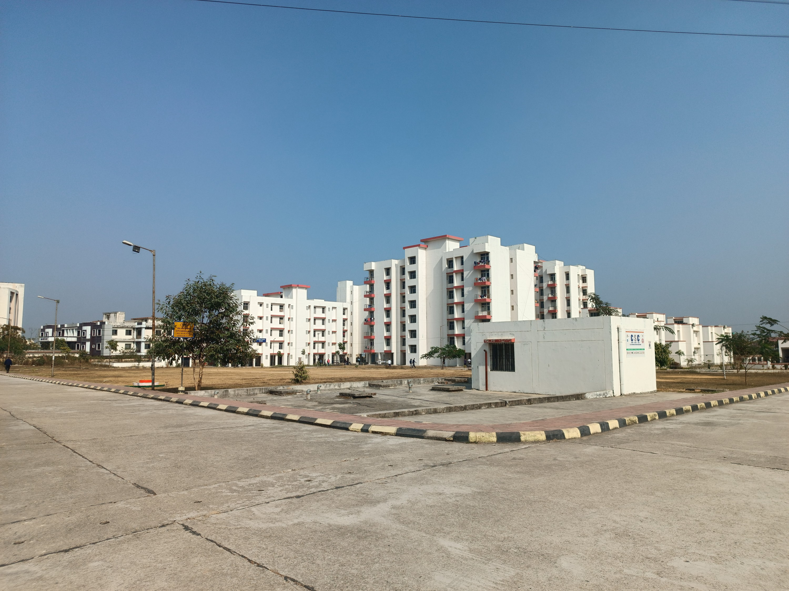
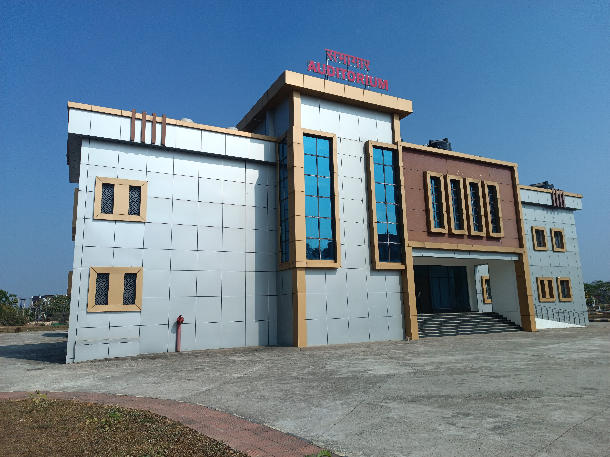

|  |
Indian Institute of Information Technology (IIIT),
Ranchi was set up by the Ministry of Human Resource Development
(MHRD) in 2016.
It is an autonomous institute funded by the Government of India (GoI),
the Government of Jharkhand along with the
industry partners Central Coalfield Limited (CCL) (5%), Tata Consultancy
Services (TCS) (5%) and Tata Technologies (5%) on a Public-Private Partnership (PPP). |
IIIT Ranchi offers admission to Bachelor of Technology
(BTech), Master of Technology (MTech) and Doctor of Philosophy
(PhD).
Presently, the institute is operating from its interim campus and
the permanent campus, which is spread over 67 acres, is under construction. |
 |
|  |
At present, IIIT Ranchi is offering UG, PG,
Ph.D. level courses in the field of Engineering and Technology. B.Tech in Computer Science and
Engineering
(CSE) is the flagship course of IIIT Ranchi. Admissions to the program are
offered on
the basis of scores in JEE Main which is further followed by JoSAA Counselling. |